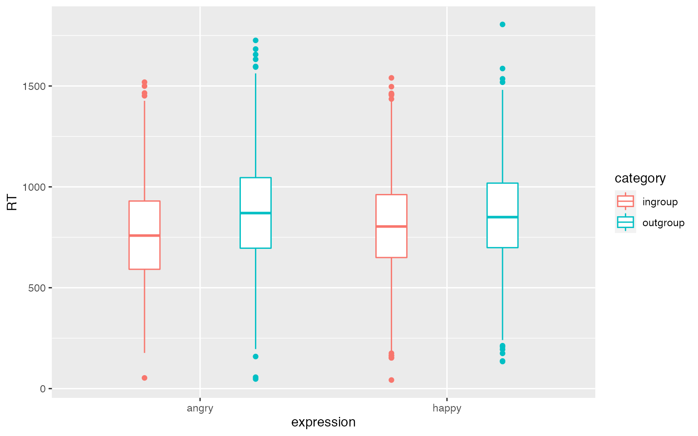

Appendix 2: Extended Example
Understanding mixed effects models through data simulation
Lisa M. DeBruine & Dale J. Barr
appendix2_extended_example.Rmdlibrary("lme4") # model specification / estimation library("afex") # deriving p-values from lmer library("broom.mixed") # extracting data from model fits library("faux") # data simulation # NOTE: to install the 'faux' package, use: # devtools::install_github("debruine/faux", build_vignettes = TRUE) library("tidyverse") # data wrangling and visualisation # set options for display in this R Markdown file knitr::opts_chunk$set(echo = TRUE, fig.width = 8, fig.height = 5, out.width = "100%") set.seed(90210)
This script uses the sim_design() function in faux to create data tables with correlated random effects with specified parameters without needing to set up the correlation and variance matrices manually.
Set Study Parameters
In this example, 100 subjects will respond twice (for happy and angry expressions) to 50 items; 25 items in each of 2 categories. In this example, expression is a within-subject and within-item factor and category is a within-subject and between-item factor.
We will set our grand intercept and the fixed effect of category the same as before (800 ms and 50ms). We will predict that classification speed will be faster for angry than happy outgroup faces, and faster for happy than angry ingroup faces. In other words, the effect of category will be bigger for happy faces than angry faces, but there will be no main effect of expression, just an interaction between category and expression, which we will set at 70 ms (the 50ms effect of category will be 35 ms bigger for happy faces and 35 ms smaller for angry faces).
Therefore, you will need to set up more complicated random effect parameters. Items and subjects will need standard deviations assigned for their random intercepts and the random slopes for any within factors (and their interactions), plus the correlations among all these SDs.
Since all subjects respond to all items, we can set up a table of trials by crossing the subject IDs with the item IDs and also any factors that are within-subject and within-item (i., expression = c("happy", "angry")). This is set up as a factor with the levels specified so they are displayed in the right order in plots.
ext_sim_data <- function( nsubj = 100, # number of subjects/btwn-grp nitem = 25, # number of items/btwn-grp b0 = 800, # grand mean b_cat = 50, # main effect of category b_exp = 0, # main effect of expression b_cat_exp = 70, # interaction between category and expression I0i_sd = 80, # by-item random intercept sd Iexp_sd = 60, # by-item random slope for exp icor = 0.2, # by-item random effect correlation S0s_sd = 100, # by-subject random intercept sd Scat_sd = 40, # by-subject random slope sd for category Sexp_sd = 80, # by-subject random slope sd for exp Scat_exp_sd = 80, # by-subject random slope sd for category*exp # by-subject random effect correlations scor = c(.3, .3, .3, # S0s * cat, exp, tc .1, .1, # cat * exp, tc .1), # exp * tc err_sd = 200 # residual (error) sd ) { # simulate items items <- faux::sim_design( within = list(components = c("I0i", "Iexp")), between = list(category = c("ingroup", "outgroup")), n = nitem, sd = data.frame(I0i = I0i_sd, Iexp = Iexp_sd), r = icor, id = "item_id", plot = FALSE ) # simulate subjects subjects <- faux::sim_design( within = list(components = c("S0s", "Scat", "Sexp", "Scatexp")), n = nsubj, sd = c(S0s = S0s_sd, Scat = Scat_sd, Sexp = Sexp_sd, Scatexp = Scat_exp_sd), r = scor, id = "subj_id", plot = FALSE ) # simulate trials dat_sim <- crossing( subj_id = subjects$subj_id, item_id = items$item_id, expression = factor(c("happy", "angry"), ordered = TRUE) ) %>% inner_join(subjects, "subj_id") %>% inner_join(items, "item_id") %>% mutate(exp = recode(expression, "happy" = -0.5, "angry" = 0.5), cat = recode(category, "ingroup" = -0.5, "outgroup" = +0.5), trial_i = b0 + I0i + S0s, trial_cat = b_cat + Scat, trial_exp = b_exp + Iexp + Sexp, trial_ct = b_cat_exp + Scatexp, err = rnorm(nrow(.), mean = 0, sd = err_sd), RT = trial_i + (trial_cat*cat) + (trial_exp*exp) + (trial_ct*cat*exp) + err) dat_sim }
Plot your data to double-check it looks like you expect.
dat_sim <- ext_sim_data() ggplot(dat_sim, aes(expression, RT, color = category)) + geom_boxplot(width = 0.25, position = position_dodge(width = 0.9))

Analyse Data
ext_sim_func <- function(...) { dat_sim <- ext_sim_data(...) mod_sim <- lmer(RT ~ 1 + cat*exp + (1 + exp | item_id) + (1 + cat*exp | subj_id), data = dat_sim, REML = TRUE) broom.mixed::tidy(mod_sim) }
Run the function once with default parameters.
ext_sim_func()## # A tibble: 18 x 8
## effect group term estimate std.error statistic df p.value
## <chr> <chr> <chr> <dbl> <dbl> <dbl> <dbl> <dbl>
## 1 fixed <NA> (Intercept) 792. 15.4 51.3 118. 1.14e-82
## 2 fixed <NA> cat 46.7 23.2 2.01 51.2 4.96e- 2
## 3 fixed <NA> exp -22.6 11.8 -1.92 106. 5.77e- 2
## 4 fixed <NA> cat:exp 97.0 19.8 4.90 72.6 5.68e- 6
## 5 ran_pars subj_… sd__(Intercept) 104. NA NA NA NA
## 6 ran_pars subj_… cor__(Intercept… 0.175 NA NA NA NA
## 7 ran_pars subj_… cor__(Intercept… 0.181 NA NA NA NA
## 8 ran_pars subj_… cor__(Intercept… 0.481 NA NA NA NA
## 9 ran_pars subj_… sd__cat 42.0 NA NA NA NA
## 10 ran_pars subj_… cor__cat.exp -0.0391 NA NA NA NA
## 11 ran_pars subj_… cor__cat.cat:exp 0.0991 NA NA NA NA
## 12 ran_pars subj_… sd__exp 79.9 NA NA NA NA
## 13 ran_pars subj_… cor__exp.cat:exp 0.200 NA NA NA NA
## 14 ran_pars subj_… sd__cat:exp 96.1 NA NA NA NA
## 15 ran_pars item_… sd__(Intercept) 79.5 NA NA NA NA
## 16 ran_pars item_… cor__(Intercept… 0.338 NA NA NA NA
## 17 ran_pars item_… sd__exp 54.4 NA NA NA NA
## 18 ran_pars Resid… sd__Observation 199. NA NA NA NAPower Analysis
reps <- 20 # runs each rep, combines them into one data frame, # and then writes the results to a file # if this crashes, you've lost everything # sims <- purrr::map_df(1:reps, ~ext_sim_func()) # write_csv(sims, "sims/ext_sims.csv") # write to file after each rep; more robust against crashes replicate(reps, { # run 1 rep of the simulation sim <- ext_sim_func() # add column for date/time sim$date <- format(Sys.time(), "%Y-%m-%d %H:%M") # check if you need to write the header append <- file.exists("sims/ext_sims.csv") # write to a file write_csv(sim, "sims/ext_sims.csv", append = append) })
sims <- read_csv("sims/ext_sims.csv", col_types = cols( # makes sure plots display in this order group = col_factor(ordered = TRUE), term = col_factor(ordered = TRUE) ))
You can use these data to calculate power for each fixed effect or plot the distribution of your fixed or random effects.
# calculate mean estimates and power for specified alpha alpha <- 0.05 sims %>% filter(effect == "fixed") %>% group_by(term) %>% summarise( mean_estimate = mean(estimate), mean_se = mean(std.error), power = mean(p.value < alpha), .groups = "drop" )
## # A tibble: 4 x 4
## term mean_estimate mean_se power
## <ord> <dbl> <dbl> <dbl>
## 1 (Intercept) 799. 15.3 1
## 2 cat 53.4 23.5 0.7
## 3 exp -6.97 12.5 0.05
## 4 cat:exp 60.7 20.7 0.75sim_stats <- sims %>% filter(effect == "fixed") %>% group_by(term) %>% summarise( value = mean(estimate), .groups = "drop" ) sims %>% filter(effect == "fixed") %>% ggplot() + geom_density(aes(estimate, y = ..count.., fill = term), alpha = 0.5, show.legend = FALSE) + geom_vline(data = sim_stats, aes(xintercept = value), color = "grey40", show.legend = FALSE) + facet_wrap(~term, ncol = 2, scales = "free_x") + theme_bw()

Distribution of fixed effects across simulations
sim_stats <- sims %>% filter(effect == "ran_pars") %>% group_by(group, term) %>% summarise(value = mean(estimate), .groups = "drop") sims %>% filter(effect == "ran_pars") %>% ggplot(aes(estimate, fill = group)) + geom_density(alpha = 0.5, show.legend = FALSE) + geom_vline(data = sim_stats, aes(xintercept = value), show.legend = FALSE) + facet_wrap(~group*term, ncol = 3, scales = "free") + theme_bw()

Distribution of random effects across simulations